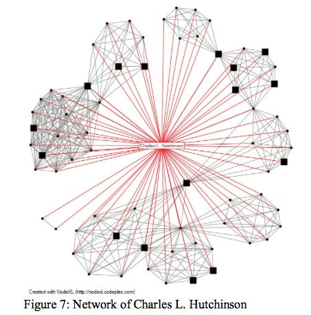
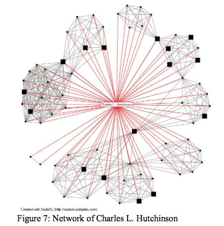

network topography
ellie madsen
keywords
network
city
topology
assemblage
graph
spatial
link
map
semantic
fields
network theory
spatial analysis
knowledge graphs
historical context
| Year | Author | Institution | Field | Description | Contribution |
|---|
a network of network theory
“Everything is related to everything else, but near things are more related than distant things."
First Law of Geography
Waldo Tobler

research questions
How can I leverage computational tools to create meaningful links between spatial and digital phenomenon & objects?
How can abstract high-dimensional semantic networks that transcend human comprehension be projected onto our 3-dimensional world at the urban scale?
How can networks be employed not only as a metaphor, but also as a medium for understanding urban spatial or relational dynamics?
How can I draw connections across data types and mediums, i.e. meta-links between discrete graphs of assemblages? How can I recognize patterns across knowledge structures?
How can we derive topological patterns from biological and ecological networks to design systems with greater robustness and resilience?
How can I crack open the black box of machine-readable graphs for human perception?
“Things already exist, we don't have to create them; we simply have to see their relationships.”
Stéphane Mallarmé
rhetorical argument
Everything is connected.
The structure of such connections is both a technical and political matter.
The computational structure of knowledge networks privilege machine logic over human meaning.
There is value in rehumanizing these systems.
project proposal
I propose to create a web-based interactive tool that overlays layers
of graphical data onto urban geographies, enabling users to explore
networks of meaning through spatial interfaces. By combining 3D city
models, open geospatial data, and vector databases, the platform will
render s a navigable topography with multiple layers of data that each
represent a distinct medium or way of knowing.
For example, the layers may include computer vision analyses of
signage, hypertextual relationships among local websites, semantic
mappings of neighborhoods, or infrastructural networks. Each layer is
composed of a graph data structure that exposes connections between
and across entities (e.g. neighborhoods, businesses, media, or urban
features), revealing both spatial and semantic relationships.
inputs
graph layers
infrastructure
hypertext
transportation
semantics
graph properties
degree
clustering coefficient
feature weights
edge distances
interface
interactive graph visualization
map
3d model
toggled networks
outputs
network topography report
raw data export
semantic embedding graphs
A ML model transforms data (text, image, etc.) into embeddings: high-dimensional vectors that capture semantic meaning.
These embeddings are stored in vector databases, such as high-dimensional graphs, where they can be efficiently searched based on similarity.
sample 3d embedding space

personal project: 2d book graph
graph topography
small-world
scale-free
hierarchical

embedding space
semantic distance
n-dimensional
vectors & nodes
world space
physical distance
3-dimensional
paths & places
Do human-constructed urban networks have small-world properties?
Why does this matter?
Small world networks are more resilient.
The prevalence of small world networks in biological systems suggests
an evolutionary advantage: this topological pattern is more robust to
perturbations, such as mutation or viral infection.
Unlike random networks, when a node is deleted from a small world
network, its connectivity, clustering, and path length are
rarely affected.
The same topological principles improve resiliency in complex urban
and social systems by enabling efficient communication, adaptation,
and fault tolerance. This ensures that local disruptions do not
cascade into systemic failures.
These network principles are necessary for climate resiliency.
When individual components (roads, power lines, or transit stations)
fail, how is the system affected?
community of practice
precedent references


visual representation

 
